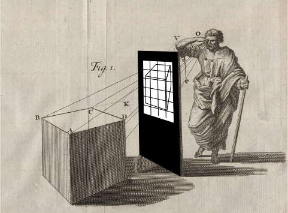
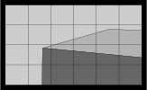
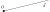
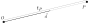
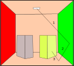

Lezione 8
Proiezioni
Maurizio Tomasi maurizio.tomasi@unimi.it
L’equazione del rendering
Richiami
Radianza (flusso \Phi in Watt normalizzato sulla superficie proiettata per unità di angolo solido): L = \frac{\mathrm{d}^2\Phi}{\mathrm{d}\Omega\,\mathrm{d}A^\perp} = \frac{\mathrm{d}^2\Phi}{\mathrm{d}\Omega\,\mathrm{d}A\,\cos\theta}, \qquad [L] = \mathrm{W}/\mathrm{m}^2/\mathrm{sr}.
Equazione del rendering: \begin{aligned} L(x \rightarrow \Theta) = &L_e(x \rightarrow \Theta) +\\ &\int_{\Omega_x} f_r(x, \Psi \rightarrow \Theta)\,L(x \leftarrow \Psi)\,\cos(N_x, \Psi)\,\mathrm{d}\omega_\Psi, \end{aligned}
Richiami
La Bidirectional Reflectance Distribution Function (BRDF), è il rapporto tra la radianza che abbandona una superficie lungo \Theta rispetto all’irradianza ricevuta da una direzione \Psi:
f_r(x, \Psi \rightarrow \Theta) = \frac{\mathrm{d}L (x \rightarrow \Theta)}{ L(x \leftarrow \Psi) \cos(N_x, \Psi)\,\mathrm{d}\omega_\Psi }, dove \cos(N_x, \Psi) è l’angolo tra la normale della superficie \mathrm{d}A e la direzione incidente \Psi.
La BRDF descrive come una superficie «risponda» alla luce incidente.
Richiami

Soluzione dell’equazione
In questa e nelle prossime lezioni scriveremo dei codici che risolveranno l’equazione in casi via via più complessi.
Cerchiamo innanzitutto di capire come sia possibile risolvere analiticamente l’equazione.
Esempi banali
Assenza di radiazione: in questo caso L_e = 0 e \forall\Psi: L(x \leftarrow \Psi) = 0, quindi
L = 0.
È una scena perfettamente buia: molto poco interessante!
Se un punto emette radiazione isotropa con radianza L_e in x_0, allora in ogni altro punto x dello spazio vale che
L(x_0 \rightarrow \Theta) = L_e
Tutto lo spazio è riempito dalla medesima radianza: poco interessante!
Punto luminoso e piano
Piano infinito diffusivo ideale e non emettente (L_e = 0) e una sferetta di raggio r a una distanza d \gg r dal piano che emette isotropicamente con radianza L_d.

Comportamento del piano
Il piano è una superficie diffusiva ideale, quindi
f_r(x, \Psi \rightarrow \Theta) = \frac{\rho_d}\pi,\quad\text{con $0 \leq \rho_d \leq 1$.}
Dato un punto x sul piano, l’equazione del rendering implica che
L(x \rightarrow \Theta) = \int_{2\pi} \frac{\rho_d}\pi\,L(x \leftarrow \Psi)\,\cos(N_x, \Psi)\,\mathrm{d}\omega_\Psi.
Qual è il valore di L(x \leftarrow \Psi)? (No, non è L_d!)
Radianza entrante
Radianza entrante
Il valore di L(x \leftarrow \Psi) è nullo, tranne quando \Psi punta verso la sorgente luminosa.
Dividiamo il dominio dell’integrale: \int_{2\pi} = \int_{\Omega(d)} + \int_{2\pi - \Omega(d)}, dove \Omega(d) è l’angolo solido della sfera alla distanza d.
Il secondo integrale, su 2\pi - \Omega(d), è nullo, perché entro quell’angolo solido L(x \leftarrow \Psi) = 0.
Radianza entrante
L’integrale sull’angolo solido \Omega(d) è semplice se supponiamo che nel dominio siano costanti sia d (distanza tra la sorgente e il punto x) che l’angolo \theta tra N_x e \Psi (la sfera è piccola): L(x \rightarrow \Theta) = \int_{\Omega(d)} \frac{\rho_d}\pi\,L_d\,\cos(N_x, \Psi)\,\mathrm{d}\omega_\Psi \approx \frac{\rho_d}\pi\,L_d\,\cos\theta \times \pi\left(\frac{r}d\right)^2, dove \theta è l’angolo tra la normale e la direzione della sferetta.
Proprietà della soluzione
- L(x \rightarrow \Theta) \approx \rho_d\,L_d\,\cos\theta\,\left(\frac{r}d\right)^2.
- Anche se il punto emette isotropicamente e la superficie è diffusiva ideale, c’è comunque una dipendenza dal coseno di \theta.
- La radianza riflessa è proporzionale alla superficie della sfera (\propto r^2).
- All’aumentare di d, la radiazione riflessa dal piano diminuisce come d^{-2} (conservazione dell’energia).
Doppio piano
Supponiamo ora di avere due piani diffusivi ideali, uno sotto e uno sopra:

Come si tratta questo caso?
Doppio piano
Consideriamo ancora il piano sottostante. Vale che:
L_\text{down}(x \rightarrow \Theta) = \int_{2\pi} \frac{\rho^\text{down}_d}\pi\,L(x \leftarrow \Psi)\,\cos(N_x, \Psi)\,\mathrm{d}\omega_\Psi.
Ma ora il valore dell’integrale non è più dovuto al solo contributo della sferetta luminosa, perché c’è anche il piano superiore.
Qual è il valore di L_\text{up}(x \leftarrow \Psi) prodotto dal piano superiore?
Doppio piano
Il valore di L(x \leftarrow \Psi) per il piano superiore si calcola con la stessa formula della slide precedente:
L_\text{up}(x \rightarrow \Theta) = \int_{2\pi} \frac{\rho^\text{up}_d}\pi\,L(x \leftarrow \Psi)\,\cos(N_x, \Psi)\,\mathrm{d}\omega_\Psi.
Ma così ci invischiamo in un problema ricorsivo!
Il problema generale
Nel caso generale avviene che l’integrale da calcolare è multiplo:
L(x \rightarrow \Theta) = \int_{\Omega^{(1)}_x} \int_{\Omega^{(2)}_x} \int_{\Omega^{(3)}_x} \ldots
È un integrale a molte dimensioni (i termini successivi al primo sono sempre meno importanti e tendono a zero, quindi le dimensioni non sono infinite).
Il problema generale
L’equazione del rendering è impossibile da risolvere analiticamente nel caso generale.
Ecco quindi la necessità di usare il calcolo numerico!
Ci sono svariati approcci alla soluzione dell’equazione del rendering.
Tipi di soluzioni
Ci sono svariati modi di risolvere l’equazione del rendering, e i loro nomi non sono sempre usati in modo consistente nella letteratura.
Gli algoritmi si dividono in due grandi famiglie:
- Image order
- La soluzione è calcolata per uno specifico osservatore.
- Object order
- La soluzione è indipendente dall’osservatore.
Noi tratteremo in questo corso solo algoritmi di tipo image order, perché sono i più semplici da implementare.
Algoritmi image order
Leon Battista Alberti, De pictura (1435)
Descrizione generale
In un algoritmo image order si definisce la posizione di un osservatore della scena (il signore col bastone nel disegno di Alberti) e la direzione in cui osserva.
Si definisce una superficie bidimensionale che rappresenta lo schermo.
Si calcola la soluzione del rendering per i soli punti \vec x sulle superfici S della scena che sono visibili dall’osservatore attraverso lo schermo.
Forward ray-tracing
Nel modello di Alberti, l’occhio dell’osservatore riceve la radiazione proveniente dal mondo esterno.
Una simulazione accurata della propagazione della luce dovrebbe quindi seguire queste fasi:
- Generare radiazione dalle sorgenti luminose.
- Tracciare il percorso della radiazione usando l’ottica geometrica.
- Ogni volta che un fotone raggiunge l’occhio dell’osservatore, registrare da che direzione proveniva e quale colore (SED) possedeva.
Questo approccio è chiamato foward ray-tracing: si segue il naturale cammino dei raggi luminosi.
Backward ray-tracing
Il backward ray-tracing viene usato nei metodi image oriented.
Esso consiste nel percorrere a ritroso il cammino di un raggio di luce, partendo dall’occhio dell’osservatore e raggiungendo la sorgente luminosa.
È computazionalmente più vantaggioso del forward ray tracing, perché gran parte dei raggi luminosi emessi da una sorgente non raggiunge l’osservatore.
Backward ray-tracing
Consideriamo l’equazione del rendering nel contesto dell’immagine di Alberti.
L’approccio del backward ray-tracing ci consente di risolvere l’equazione del rendering per le sole parti di superfici che sono visibili attraverso lo schermo.
Vantaggi e svantaggi
In questo corso implementeremo algoritmo di backward ray-tracing, ma questa non è sempre la scelta migliore!
Il forward ray-tracing può essere vantaggioso quando si generano animazioni:
- Si risolve l’equazione del rendering per tutte le superfici della scena.
- Si generano N fotogrammi dell’animazione senza dover ricalcolare la soluzione N volte.
Questo vale ovviamente solo nel caso in cui nulla nella scena cambi, tranne eventualmente la posizione dell’osservatore.
Algoritmi molto usati di forward ray tracing sono radiosity e photon mapping.
Schermo e osservatore
Discretizzazione dello schermo
Alberti considerava uno schermo come una superficie disegnabile; la stessa idea si ritrova in alcune stampe di Dürer (XVI secolo).
Nella computer graphics si usa la stessa idea, con l’accortezza però di rappresentare lo schermo come una matrice discreta di punti.

Discretizzazione dello schermo
L’osservatore di Alberti vedrebbe questo:

I quadrati rappresentano i pixel in cui è suddiviso lo schermo. (Molto grossi! La risoluzione standard di un monitor recente è almeno 1920×1080).
Proiettare raggi luminosi
Se seguiamo l’approccio del backward ray-tracing, dobbiamo proiettare raggi attraverso i pixel dello schermo. Questo sarà l’algoritmo:
- Per ogni pixel generiamo un raggio che passi dal pixel.
- Ciascun raggio colpirà una superficie dell’ambiente in un punto \vec x.
- Calcoliamo la soluzione dell’equazione del rendering in \vec x, che è la radianza emessa in direzione dell’osservatore (ossia, passante attraverso il pixel dello schermo).
- Usiamo la radianza stimata per calcolare il colore RGB del pixel.
Questo è un approccio generale: non abbiamo ancora spiegato come risolvere l’equazione del rendering!
Raggi per pixel
Assumiamo che ogni raggio passi per il centro di un pixel:

Per un’immagine di risoluzione 1920×1080 occorre creare circa 2×10⁶ raggi luminosi e risolvere altrettante volte l’equazione del rendering.
Raggi luminosi
Quali caratteristiche deve avere la rappresentazione nella memoria di un computer di un raggio luminoso?
- Origine O (punto 3D);
- Direzione di propagazione \vec d (vettore 3D);
- Minima distanza t_\text{min};
- Massima distanza t_\text{max};
- Profondità n.
Vediamo nel dettaglio ciascuna di queste proprietà.
Origine e direzione
Siete probabilmente familiari con l’equazione canonica della retta che avete usato in geometria analitica (ax + by + c = 0, oppure y = mx + q), ma queste formule valgono solo in 2D e non sono orientate.
Il cammino di un raggio luminoso è meglio rappresentato dall’equazione
r(t) = O + t \vec d,
dove O è il punto di origine, \vec d è la direzione, e t \in \mathbb{R} un parametro.

Intersezione di raggi
Per il parametro t deve ovviamente valere che t \geq 0.
Dato un raggio luminoso che interseca una superficie S in un punto P, vale che
P = r(t_P) = O + t_P \vec d
per qualche valore t_P > 0.

Distanza
Il valore di t_P è concettualmente simile a un tempo, ma è un numero puro.
Rappresenta la distanza tra l’origine O e il punto P, in unità di misura della lunghezza del vettore \vec d.
Distanza minima
Dal punto di vista di un programma, è utile porre dei limiti alla distanza t: ad esempio, è ovvio che siamo interessati solo alle intersezioni con t > 0.
Non solo, ma i raggi che partono dall’occhio dell’osservatore devono avere almeno il tempo di raggiungere lo schermo, ossia t \geq t_\text{min}.
Distanza massima
Analogamente, è sensato porre una distanza massima t_\text{max}.
Questa distanza viene usata per quegli oggetti così lontani dall’osservatore che il loro contributo alla scena sia considerato trascurabile.
Se non si è interessati a mettere un limite massimo alla distanza degli oggetti rappresentati, si può comunque porre t_\text{max} = +\infty.
(Lo standard IEEE per la rappresentazione dei numeri floating-point definisce i valori
+Inf,-InfeInf, che sono utilissimi per questo scopo).
Profondità
L’ultimo parametro associato a un raggio è la profondità (depth) n, un numero intero incrementato ogni volta che si crea un raggio da una riflessione:

Nei ray-tracer si pone solitamente un limite alla profondità massima.
Tipi di proiezione
Creazione di raggi
Fissato lo schermo e il modo di rappresentare un raggio luminoso, resta il problema di come generare i raggi che attraversano lo schermo.
Esistono molti modi per produrre questi raggi, e ciascuno di questi porta a una diversa rappresentazione.
Noi ci concentreremo su due tipi di proiezioni:
Proiezione ortogonale;
Proiezione prospettica.
Istruzioni LEGO (proiezione ortogonale)
Klondike adventures (proiezione ortogonale)

La città nuova, Antonio Sant’Elia (1914, proiezione prospettica)
Differenze
La proiezione ortogonale preserva il parallelismo: rette parallele nello spazio 3D restano parallele nel disegno.
La proiezione prospettica rende gli oggetti lontani più piccoli: è più verosimile.
Proiezioni

Osservatore
Per implementare una proiezione è necessario definire la posizione dell’osservatore e la direzione in cui guarda.
Un approccio molto usato è quello di usare queste quantità:
- Posizione dell’osservatore P (punto 3D);
- Direzione di vista \vec d (vettore 3D);
- Vettore «alto» \vec u (vettore 3D);
- Vettore «destra» \vec r (vettore 3D).
Osservatore
Aspect ratio
Rapporto di forma
Nella rappresentazione dei vettori che identificano l’osservatore, \vec r e \vec u avevano lunghezza diversa.
Ciò è dovuto al fatto che gli schermi dei computer non sono quadrati.
Il rapporto tra larghezza ed altezza è detto aspect ratio; se riferito a uno schermo, è detto display aspect ratio.
Monitor catodici
I vecchi monitor e televisori a tubo catodico avevano un aspect ratio di 4:3.
I monitor moderni hanno un aspect ratio di 16:9 (più spesso) o 16:10.
La tendenza delle case produttrici sembra essere quella di abbandonare il 16:9/16:10 e adottare il 3:2 (es. Microsoft Surface).
I programmi di ray-tracing dovrebbero definire \vec r in modo che
\left\|\vec r\right\| = R_\text{display}\,\left\|\vec u\right\|,
dove R_\text{display} = N_\text{columns} / N_\text{rows} è l’aspect ratio dello schermo.
Pixel aspect ratio
Oltre al display aspect ratio esiste anche il pixel aspect ratio, che è il rapporto tra larghezza ed altezza di un singolo pixel.
Questo era un problema sentito soprattutto con vecchie schede grafiche (CGA, EGA, VGA, SVGA), che adottavano risoluzioni con pixel aspect ratio 16:10 (es., 320×200, 640×400, …).
Su questi tipi di display, non tenere conto del valore del pixel aspect ratio porta a deformazioni nelle immagini visualizzate.
Sinistra: immagine corretta. Destra: aspect ratio sbagliato
Display moderni
Per risolvere il problema della discrepanza tra pixel e display aspect ratio, oggi tutti i display adottano un pixel aspect ratio uguale a 1:1.
Nel nostro codice assumeremo quindi che il pixel aspect ratio sia sempre 1:1.
Sarebbe comunque banale introdurre il supporto per diversi pixel aspect ratio nel nostro ray-tracer: basta suddividere lo schermo virtuale in rettangoli anziché in quadrati.